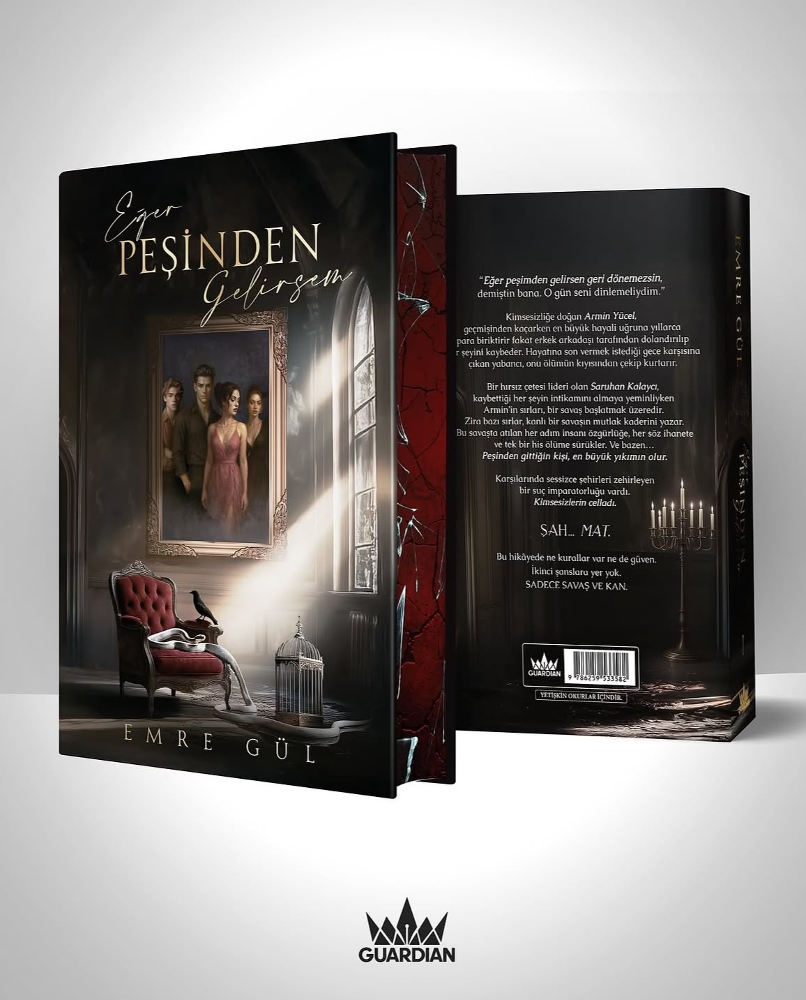

“Eğer peşimden gelirsen geri dönemezsin, demiştin bana. O gün seni dinlemeliydim.” Kimsesizliğe doğan Armin Yücel, geçmişinden kaçarken en büyük hayali uğruna yıllarca para biriktirir fakat erkek arkadaşı tarafından dolandırılıp her şeyini kaybeder. Hayatına son vermek istediği gece karşısına çıkan yabancı, onu ölümün kıyısından çekip kurtarır.
Bir hırsız çetesi lideri olan Saruhan Kalaycı, kaybettiği her şeyin intikamını almaya yeminliyken Armin’in sırları, bir savaş başlatmak üzeredir. Zira bazı sırlar, kanlı bir savaşın mutlak kaderini yazar. Bu savaşta atılan her adım insanı özgürlüğe, her söz ihanete ve tek bir his ölüme sürükler. Ve bazen… Peşinden gittiğin kişi, en büyük yıkımın olur.
Karşılarında sessizce şehirleri zehirleyen bir suç imparatorluğu vardı. Kimsesizlerin celladı. Şah… Mat. Bu hikâyede ne kurallar var ne de güven. İkinci şanslara yer yok. Sadece savaş ve kan.
Not: Yetişkin okurlar içindir.